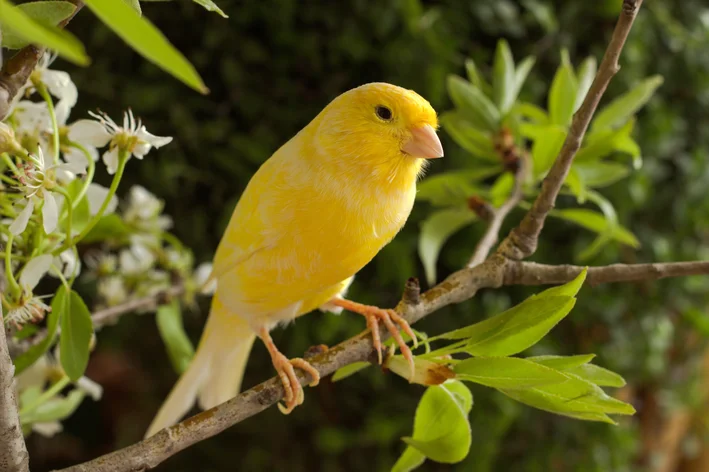
Canario
El canario es un ave pequeña, alegre y muy apreciada por su canto melodioso. Es común como mascota debido a su carácter tranquilo y su capacidad para adaptarse fácilmente a espacios interiores. Sus colores vibrantes lo hacen muy llamativo.
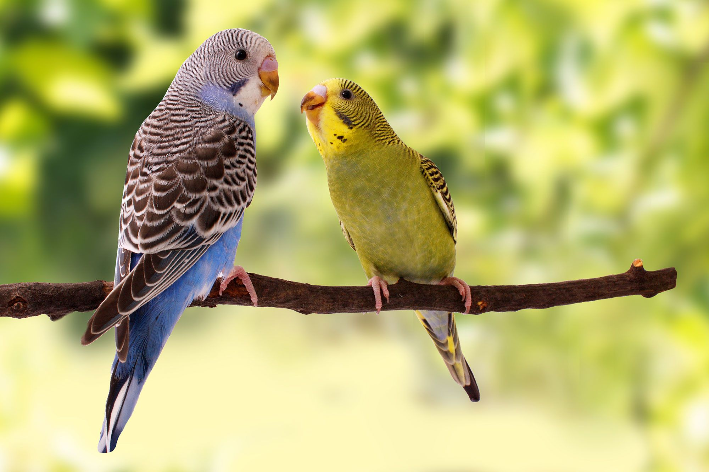
Periquito
El periquito es un ave sociable, inteligente y muy activa. Le encanta interactuar con las personas y otros periquitos. Es conocido por su capacidad para imitar sonidos y aprender pequeños trucos.
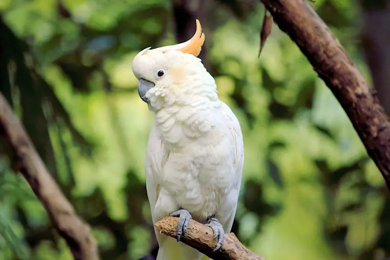
Cacatúa
La cacatúa es un ave muy expresiva y cariñosa. Se caracteriza por su cresta móvil y su personalidad juguetona. Puede crear fuertes lazos con su dueño y aprender palabras o sonidos.
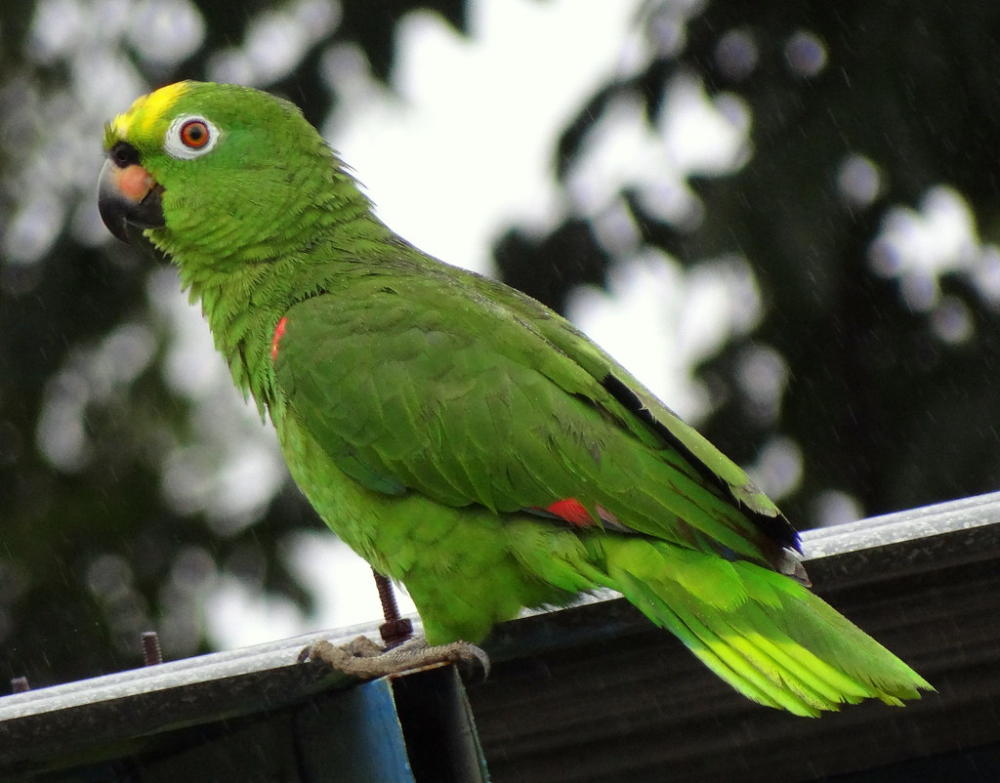
Loro
El loro es un ave muy inteligente y sociable, conocida por su capacidad para imitar sonidos y palabras humanas. Le encanta interactuar con las personas, jugar y recibir atención. Sus colores llamativos y su personalidad divertida lo convierten en una de las aves domésticas más queridas.
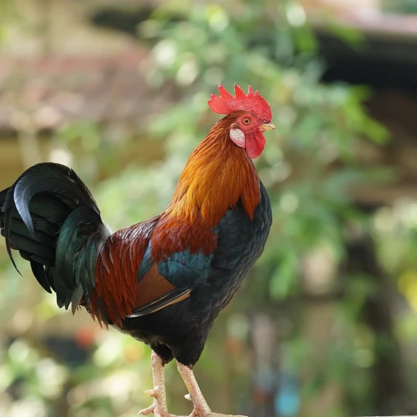
Gallo
El gallo es un ave doméstica muy común en zonas rurales. Es conocido por su canto al amanecer por ser el protector natural del corral. Tiene una personalidad fuerte, es territorial y mantiene el orden entre las gallinas. Su plumaje colorido lo hace muy llamativo y elegante.

Guineo (Gallina de Guinea)
El guineo es un ave doméstica muy popular en Venezuela por su resistencia y su capacidad para alertar sobre cualquier movimiento extraño. Es ruidoso, activo y excelente para mantener alejados a depredadores pequeños. Su plumaje moteado es muy característico.
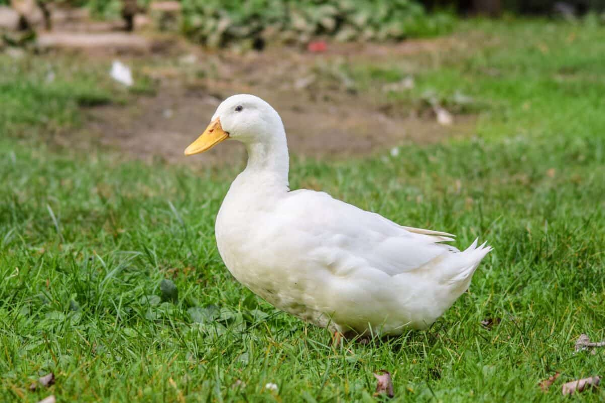
Pato
El pato es un ave acuática amigable y adaptable. Puede vivir en estanques, lagunas o incluso en patios amplios. Su forma de caminar y su graznido lo hacen muy característico y simpático.
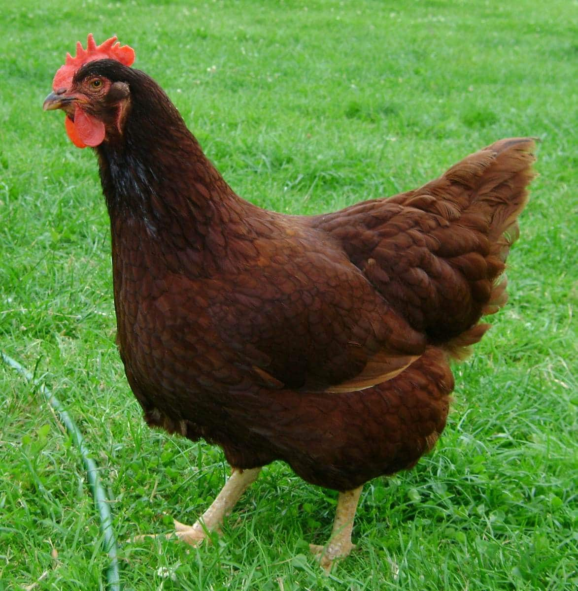
Gallina
La gallina es un ave doméstica muy común en granjas y hogares rurales. Es tranquila, resistente y forma parte importante de la vida cotidiana en muchas comunidades por su producción de huevos.
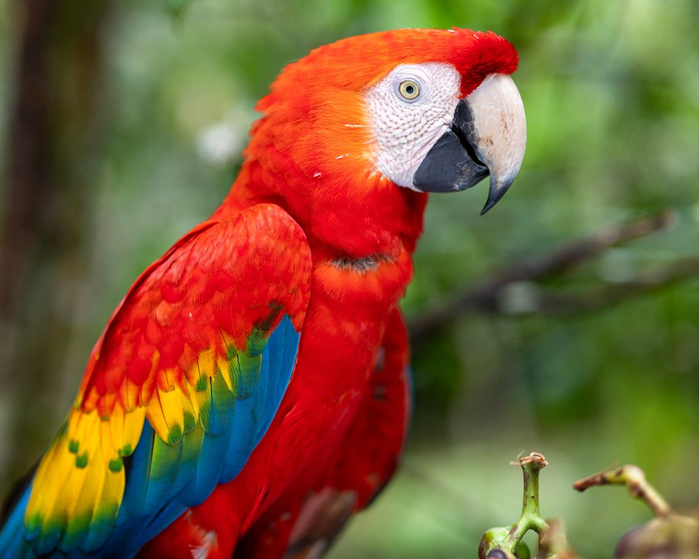
Guacamaya Roja
Colorida, inteligente y muy sociable. Es una de las aves más llamativas del mundo.
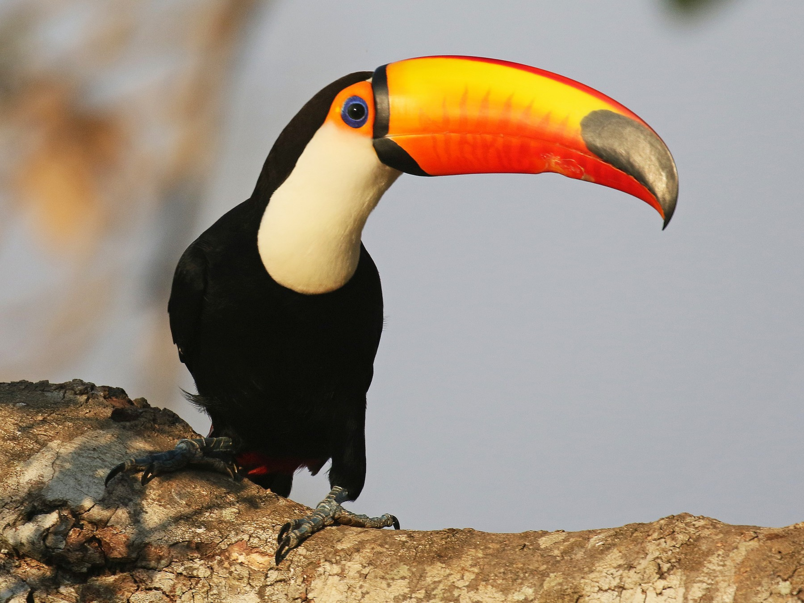
Tucán Toco
Exótico, curioso y con un pico enorme. Es un símbolo de las selvas tropicales.
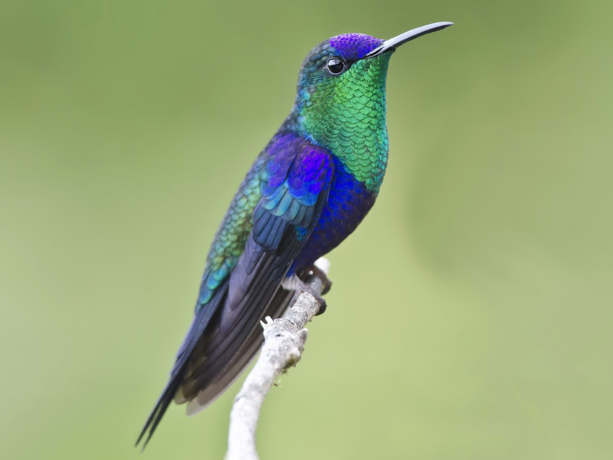
Colibrí Esmeralda
Pequeño, rápido y brillante. Puede mover sus alas hasta 80 veces por segundo.
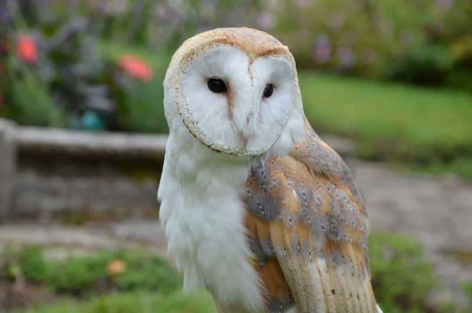
Lechuza
Elegante, silenciosa y misteriosa. La lechuza tiene una vista y audición excepcionales que le permiten cazar en completa oscuridad. Su vuelo es tan suave que no produce sonido, lo que la convierte en una depredadora nocturna perfecta.